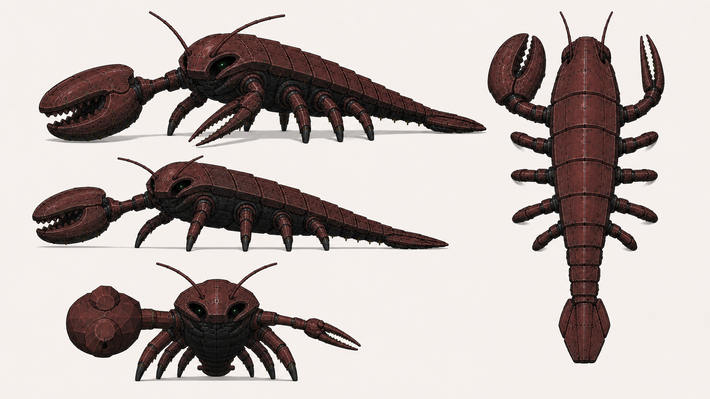

굵은 집게의 좌우 기준부터 잠급니다
현재 생성본은 블렌더의 다리 수는 어느 정도 따라왔지만, 몸통·집게 구조가 기존 생성형 디자인으로 되돌아갔습니다. 먼저 좌우 기준을 확정해야 이후 모든 각도에서 같은 팔을 유지할 수 있습니다.
현재 v3 생성본
굵은 집게가 정면 기준 화면 왼쪽에 보입니다. 다각도마다 이 기준이 흔들릴 여지가 있습니다.

선택 후 다음 단계에서 ‘블렌더 실루엣을 얼마나 엄격히 옮길지’를 정하겠습니다. 생성은 그 두 항목이 잠긴 뒤 다시 시도합니다.